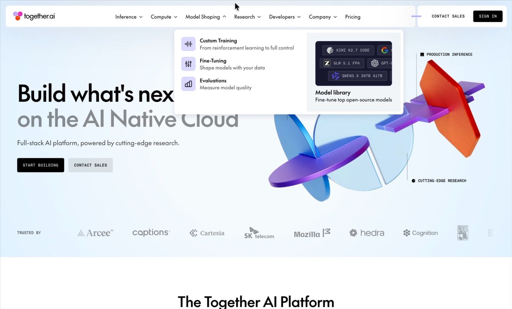
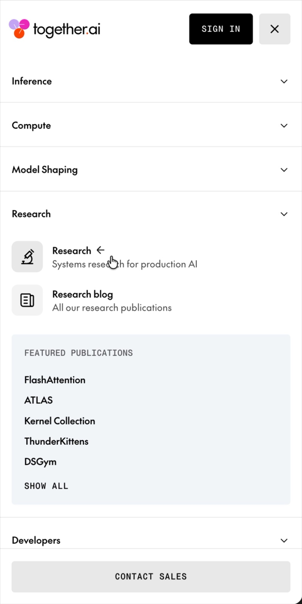

本轮结果
现在可以看到什么
两段录屏已经补齐 Together AI 电脑端与手机端导航证据。首页导航现已改成：电脑悬停即开、横向移动直接切换浮层；手机打开整屏菜单、分类单组展开。中科达云只采用互动逻辑与信息层级，颜色、文案、标记和具体构图均为本站方案。
网页变化
本轮已经更新
- 需求阶段已由
next:reference批准并锁定，恢复点为 Git 提交8ca7084。 - 首页新增“借节奏与方法，不借素材与构图”区，直接展示本轮三项结构原则。
- 电脑端导航改为悬停即开，并在产品、解决方案、专家服务、资源之间直接切换当前浮层。
- 每个浮层使用条目列表与辅助导览两区结构；未复制 Together AI 的图标、图片、文案或配色。
- 手机端改为覆盖剩余视口的菜单，分类按单组手风琴原位展开，同时保留菜单关闭与页面滚动锁定。
- 点击、键盘、Escape、点击外部、无 JavaScript 与减少动画仍有本站自己的完整回退。
- Together AI 已取代 CoreWeave 成为唯一导航互动参考；CoreWeave 只保留为内容结构参考。
- 本轮不新增其余 15 个页面，不定稿配色、字体、图片或滚动动效。
需要你的决定
请重点确认这些内容
- 结构原则是否成立：先定位，再用公开事实证明，最后逐章展开平台、产品、迁移与服务。
- 内容分流是否成立：首页负责总览，产品、解决方案和技术文档页负责信息密度。
- 长页面是否采用强章节推进，而不是反复使用同尺寸三列卡片。
- 电脑端的悬停打开、组间切换和浮层信息层级是否符合你的预期。
- 手机端的整屏菜单、单组展开和关闭方式是否符合你的预期。
- 复制边界是否正确：不复制参考网站素材、代码、文案、完整构图、客户证明或业务数据。
- 是否接受本轮证据边界：Transform9 与 CoreWeave 只确认网页内容和信息架构；Together AI 的电脑、手机菜单形态与可见互动由录屏确认，但精确缓动、时长、键盘行为和源码未确认。
本轮依据
参考依据与可用范围


复制边界
明确不从参考网站带走什么
- 不复制图片、视频、图标、代码、文案、完整构图或品牌比例。
- 不借用医疗场景、客户 Logo、评价、认证、表单和效果数据。
- 不使用无来源的案例、客户墙、业务指标和占位插画。
- 不照搬英文排版，也不把未验证的互动描述为参考网站事实。
- 不依赖动效显示核心内容；无 JavaScript 和减少动画时仍完整可读。
本轮入口
真实网站只更新首页
首页结构与参考原则草案
已更新，可直接检查导航与新增章节
其余 15 个计划页面下一步确认 URL 与页面关系后再建立
显示检查
电脑和手机状态
- 电脑
- 已复查：2560×1440、1920×1080 与 1180×820，悬停打开、组间切换、离开关闭、Escape 与键盘均通过
- 平板
- 已复查：820×1180，整屏菜单、单组展开、页面滚动锁定与 Escape 均通过
- 手机
- 已复查：390×844，菜单、单组手风琴、关闭、Escape 与横向溢出检查均通过
确认后怎么继续
输入下面这条命令
next:sitemap
请先检查首页电脑端与手机端导航。确认本轮参考原则、交互与复制边界后，使用这条命令进入完整页面清单与 URL 阶段。